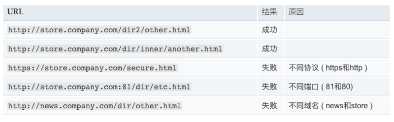
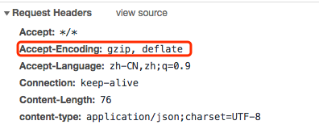
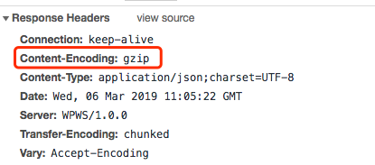
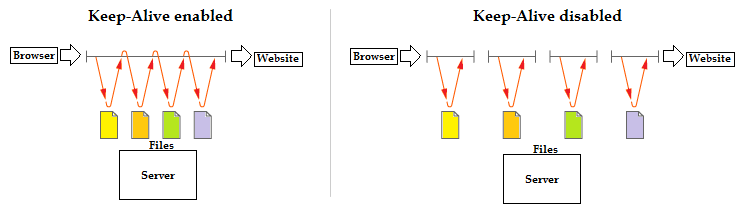
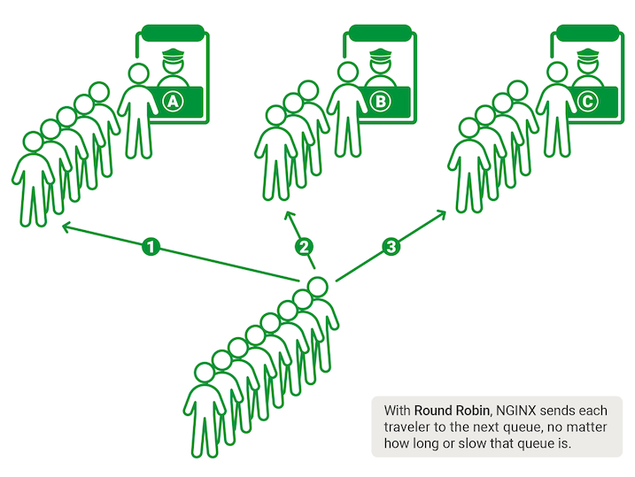
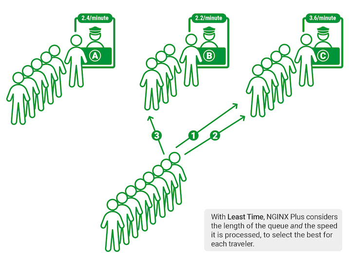

摘要： 最常用的Web服务器 -- Nginx
Fundebug经授权转载，版权归原作者所有。
nginx是一个高性能的HTTP和反向代理服务器，也是一个通用的TCP/UDP代理服务器，最初由俄罗斯人Igor Sysoev编写。
nginx现在几乎是众多大型网站的必用技术，大多数情况下，我们不需要亲自去配置它，但是了解它在应用程序中所担任的角色，以及如何解决这些问题是非常必要的。
下面我将从nginx在企业中的真实应用来解释nginx在应用程序中起到的作用。
为了便于理解，首先先来了解一下一些基础知识，nginx是一个高性能的反向代理服务器那么什么是反向代理呢？
代理是在服务器和客户端之间假设的一层服务器，代理将接收客户端的请求并将它转发给服务器，然后将服务端的响应转发给客户端。
不管是正向代理还是反向代理，实现的都是上面的功能。
正向代理，意思是一个位于客户端和原始服务器(origin server)之间的服务器，为了从原始服务器取得内容，客户端向代理发送一个请求并指定目标(原始服务器)，然后代理向原始服务器转交请求并将获得的内容返回给客户端。
正向代理是为我们服务的，即为客户端服务的，客户端可以根据正向代理访问到它本身无法访问到的服务器资源。
正向代理对我们是透明的，对服务端是非透明的，即服务端并不知道自己收到的是来自代理的访问还是来自真实客户端的访问。
反向代理（Reverse Proxy）方式是指以代理服务器来接受internet上的连接请求，然后将请求转发给内部网络上的服务器，并将从服务器上得到的结果返回给internet上请求连接的客户端，此时代理服务器对外就表现为一个反向代理服务器。
反向代理是为服务端服务的，反向代理可以帮助服务器接收来自客户端的请求，帮助服务器做请求转发，负载均衡等。
反向代理对服务端是透明的，对我们是非透明的，即我们并不知道自己访问的是代理服务器，而服务器知道反向代理在为他服务。
图片描述
下面是一个nginx配置文件的基本结构：
events {
}
http
{
server
{
location path
{
...
}
location path
{
...
}
}
server
{
...
}
}main:nginx的全局配置，对全局生效。events:配置影响nginx服务器或与用户的网络连接。http：可以嵌套多个server，配置代理，缓存，日志定义等绝大多数功能和第三方模块的配置。server：配置虚拟主机的相关参数，一个http中可以有多个server。location：配置请求的路由，以及各种页面的处理情况。upstream：配置后端服务器具体地址，负载均衡配置不可或缺的部分。下面是nginx一些配置中常用的内置全局变量，你可以在配置的任何位置使用它们。
| 变量名 | 功能 |
|---|---|
$host |
请求信息中的Host，如果请求中没有Host行，则等于设置的服务器名 |
| $request_method | 客户端请求类型，如GET、POST
| $remote_addr | 客户端的IP地址 |
|$args | 请求中的参数 |
|$content_length| 请求头中的Content-length字段 |
|$http_user_agent | 客户端agent信息 |
|$http_cookie | 客户端cookie信息 |
|$remote_addr | 客户端的IP地址 |
|$remote_port | 客户端的端口 |
|$server_protocol | 请求使用的协议，如HTTP/1.0、·HTTP/1.1| |$服务器地址server_addr| 服务器地址 | |$server_name| 服务器名称| |$server_port`|服务器的端口号|
先追本溯源以下，跨域究竟是怎么回事。
同源策略限制了从同一个源加载的文档或脚本如何与来自另一个源的资源进行交互。这是一个用于隔离潜在恶意文件的重要安全机制。通常不允许不同源间的读操作。
如果两个页面的协议，端口（如果有指定）和域名都相同，则两个页面具有相同的源。

例如：
fe.server.comdev.server.com现在我在fe.server.com对dev.server.com发起请求一定会出现跨域。
现在我们只需要启动一个nginx服务器，将server_name设置为fe.server.com,然后设置相应的location以拦截前端需要跨域的请求，最后将请求代理回dev.server.com。如下面的配置：
server {
listen 80;
server_name fe.server.com;
location / {
proxy_pass dev.server.com;
}
}这样可以完美绕过浏览器的同源策略：fe.server.com访问nginx的fe.server.com属于同源访问，而nginx对服务端转发的请求不会触发浏览器的同源策略。
根据状态码过滤
error_page 500 501 502 503 504 506 /50x.html;
location = /50x.html {
#将跟路径改编为存放html的路径。
root /root/static/html;
}根据URL名称过滤，精准匹配URL，不匹配的URL全部重定向到主页。
location / {
rewrite ^.*$ /index.html redirect;
}根据请求类型过滤。
if ( $request_method !~ ^(GET|POST|HEAD)$ ) {
return 403;
}推荐大家使用Fundebug，一款很好用的BUG监控工具~
GZIP是规定的三种标准HTTP压缩格式之一。目前绝大多数的网站都在使用GZIP传输 HTML、CSS、JavaScript 等资源文件。
对于文本文件，GZip 的效果非常明显，开启后传输所需流量大约会降至 1/4 ~ 1/3。
并不是每个浏览器都支持gzip的，如何知道客户端是否支持gzip呢，请求头中的Accept-Encoding来标识对压缩的支持。

启用gzip同时需要客户端和服务端的支持，如果客户端支持gzip的解析，那么只要服务端能够返回gzip的文件就可以启用gzip了,我们可以通过nginx的配置来让服务端支持gzip。下面的respone中content-encoding:gzip，指服务端开启了gzip的压缩方式。

gzip on;
gzip_http_version 1.1;
gzip_comp_level 5;
gzip_min_length 1000;
gzip_types text/csv text/xml text/css text/plain text/javascript application/javascript application/x-javascript application/json application/xml;gzip模块offon / offGZip 所需的HTTP 最低版本HTTP/1.1这里为什么默认版本不是1.0呢？
HTTP 运行在TCP 连接之上，自然也有着跟TCP 一样的三次握手、慢启动等特性。
启用持久连接情况下，服务器发出响应后让TCP连接继续打开着。同一对客户/服务器之间的后续请求和响应可以通过这个连接发送。

为了尽可能的提高 HTTP 性能，使用持久连接就显得尤为重要了。
HTTP/1.1默认支持TCP持久连接，HTTP/1.0 也可以通过显式指定 Connection: keep-alive 来启用持久连接。对于TCP持久连接上的HTTP 报文，客户端需要一种机制来准确判断结束位置，而在 HTTP/1.0中，这种机制只有Content-Length。而在HTTP/1.1中新增的 Transfer-Encoding: chunked 所对应的分块传输机制可以完美解决这类问题。
nginx同样有着配置chunked的属性chunked_transfer_encoding，这个属性是默认开启的。
Nginx在启用了GZip的情况下，不会等文件 GZip 完成再返回响应，而是边压缩边响应，这样可以显著提高 TTFB(Time To First Byte，首字节时间，WEB 性能优化重要指标)。这样唯一的问题是，Nginx 开始返回响应时，它无法知道将要传输的文件最终有多大，也就是无法给出Content-Length这个响应头部。
所以，在HTTP1.0中如果利用Nginx启用了GZip，是无法获得Content-Length的，这导致HTTP1.0中开启持久链接和使用GZip只能二选一，所以在这里gzip_http_version默认设置为1.1。
11-9Content-Length小于该值的请求将不会被压缩01000以上MIME类型)text/html(默认不压缩js/css)如上面的图，前面是众多的服务窗口，下面有很多用户需要服务，我们需要一个工具或策略来帮助我们将如此多的用户分配到每个窗口，来达到资源的充分利用以及更少的排队时间。
把前面的服务窗口想像成我们的后端服务器，而后面终端的人则是无数个客户端正在发起请求。负载均衡就是用来帮助我们将众多的客户端请求合理的分配到各个服务器，以达到服务端资源的充分利用和更少的请求时间。
Upstream指定后端服务器地址列表
upstream balanceServer {
server 10.1.22.33:12345;
server 10.1.22.34:12345;
server 10.1.22.35:12345;
}在server中拦截响应请求，并将请求转发到Upstream中配置的服务器列表。
server {
server_name fe.server.com;
listen 80;
location /api {
proxy_pass http://balanceServer;
}
}上面的配置只是指定了nginx需要转发的服务端列表，并没有指定分配策略。
轮询策略

默认情况下采用的策略，将所有客户端请求轮询分配给服务端。这种策略是可以正常工作的，但是如果其中某一台服务器压力太大，出现延迟，会影响所有分配在这台服务器下的用户。
upstream balanceServer {
server 10.1.22.33:12345;
server 10.1.22.34:12345;
server 10.1.22.35:12345;
}
最小连接数策略
将请求优先分配给压力较小的服务器，它可以平衡每个队列的长度，并避免向压力大的服务器添加更多的请求。
upstream balanceServer {
least_conn;
server 10.1.22.33:12345;
server 10.1.22.34:12345;
server 10.1.22.35:12345;
}
最快响应时间策略

依赖于NGINX Plus，优先分配给响应时间最短的服务器。
upstream balanceServer {
fair;
server 10.1.22.33:12345;
server 10.1.22.34:12345;
server 10.1.22.35:12345;
}
客户端ip绑定
来自同一个ip的请求永远只分配一台服务器，有效解决了动态网页存在的session共享问题。
upstream balanceServer {
ip_hash;
server 10.1.22.33:12345;
server 10.1.22.34:12345;
server 10.1.22.35:12345;
}
location ~* \.(png|gif|jpg|jpeg)$ {
root /root/static/;
autoindex on;
access_log off;
expires 10h;# 设置过期时间为10小时
}
匹配以png|gif|jpg|jpeg为结尾的请求，并将请求转发到本地路径，root中指定的路径即nginx本地路径。同时也可以进行一些缓存的设置。
nginx的功能非常强大，还有很多需要探索，上面的一些配置都是公司配置的真实应用（精简过了）。
文中如有错误，欢迎在评论区指正，如果这篇文章帮助到了你，欢迎点赞和关注。
想阅读更多优质文章、可关注我的github博客，你的star✨、点赞和关注是我持续创作的动力！
推荐大家使用Fundebug，一款很好用的BUG监控工具~